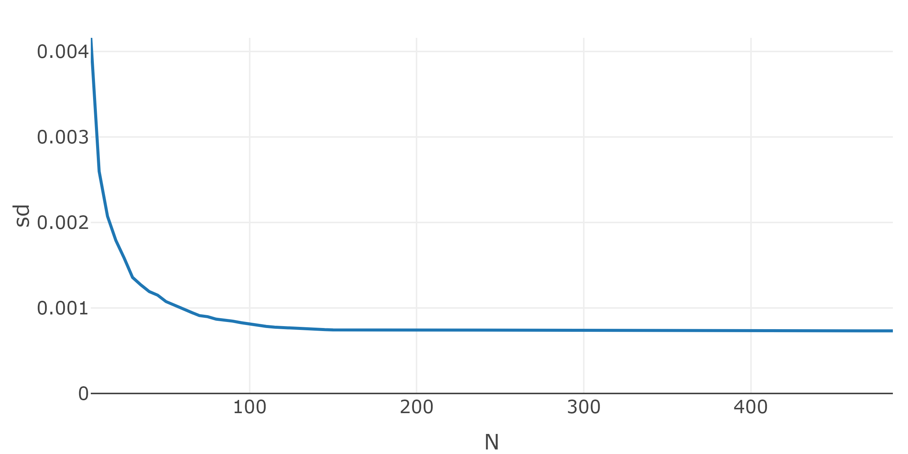

Chapter 7 Analytic Solver for Quadratic Programming Problems
The benefits and drawbacks of analytic solvers for quadratic programming problems will be discussed in this chapter. It would go beyond the scope of this thesis to explain the mathematical underlying principles of how a solver addresses quadratic problems, only the applications and analysis are discussed. The foremost reason of addressing quadratic programming solvers is to use it as a benchmark for the PSO.
7.1 Quadratic Programming (QP)
A quadratic program is a minimization problem of some function that returns a scalar and consists of an quadratic term and an linear term, dependent on the variable of interest. Additionally can the problem be constrained by several linear inequalities that restrict the solution. The general formulation used, is to find \(x\) that minimizes the following problem: \[ min \ \frac{1}{2} \cdot x^T \times D \times x - d^T \times x \] and holds under the linear constraints: \[ A^T \times x >= b_0 \]
Some other sources notate the problem with different signs or coefficients that are all exchangeable with the above stated problem. Additionally has the problem above the same notation that is used in the R-Package quadprog which will reduce substitution efforts. All modern programming languages do have many solvers for quadratic problem. They differ mostly in computational time on specific problems and the requirements. Some commercial QP-solvers do additionally accept more complex constraints, like absolute (e.g. \(|A^T \times x| >= a_0\)) or mixed-integer (e.g. \(x \in \mathbb{N}\)). Specially the mixed-integer constraint problems will result in a enormously increase of memory.
7.2 QP Solver from quadprog
The most common free QP-solver used in R is quadprog which consists of a single function named solve.QP. Its implementation routine is the dual method of Goldfarb and Idnani that was published in (Goldfarb and Idnani 1982) and (Goldfarb and Idnani 1983). It uses the above stated QP with the requirement that \(D\) needs to be a symmetric positive definite matrix. It means that \(D\in R^{N \times N}\) and \(x^T D x > 0 \ \forall \ x \in R^N\) which is equivalent to, all eigenvalues are bigger than null. In most cases this is not achieved by using the estimation of the covariance matrix \(\sum\), but its possible to find the nearest positive definite matrix of \(\textstyle\sum\) with the function nearPD from the Matrix R-Package. The error that occurs is printed and often do not exceed a percentage change of elements above \(10^{-15} \%\), which is negligible for the context of this thesis. The solve.QP functions for a \(N\) dimensional vector of interest, has the following arguments, that can be found in the above stated formulation of a QP:
Dmat: Symmetric positive definite matrix \(D \in R^{N \times N}\) of the quadratic term.dvec: Vector \(d \in R^{N}\) of the linear termAmat: Constraint matrix \(A\)bvec: Constraint vector \(b_0\)meq = 1: means that the first row of \(A\) is treated as equality constraint
The return of solve.QP is a list and contains among other things the following attributes of interest:
solution: Vector containing the solution \(x\) of the quadratic programming problem. (e.g. portfolio weights)value: Scalar, the value of the quadratic function at the solution
7.3 Example: Solving MVP with solve.QP
This section provides insights into the effects of diversification and the use of solve.QP, by creating ten different efficient frontiers from a pool of ten assets. Each efficient frontier \(i \in \{1, 2, \cdots, 10\}\) consists of \(N_i = i\) assets and is created by adding the asset with the next smallest variance first. After loading returns for ten of the biggest equity’s in the US market, the variance is calculated to arrange all columns ascending by its variance, like shown in the code bellow:
returns_raw <- buffer(
get_yf(
tickers = c("IBM", "GOOG", "AAPL", "MSFT", "AMZN", "NVDA", "JPM", "META", "V", "WMT"),
from = "2016-01-01",
to = "2021-12-31"
)$returns,
"AS_10_assets"
)
# re-arrange: low var first
vars <- sapply(returns_raw, var)
returns_raw <- returns_raw[, order(vars, decreasing = F)]The next step is to create a function mvp that has the arguments return and lambda. It calculates the expected returns mu and the estimated positive definite covariance cov. Afterwards it solves a MVP with the constraints \(\textstyle\sum w = 1\) and \(w>=0\), which returns key features mu, var and composition of the portfolio.
mvp <- function(returns, lambda){
tc <- tryCatch({
mu <- sapply((1+returns), prod)^(1/nrow(returns))-1
cov <- as.matrix(nearPD(cov(returns))$mat)
mat <- list(
Dmat = lambda * cov,
dvec = (1-lambda) * mu,
Amat = t(rbind(
rep(1, ncol(returns)), # sum up to 1
diag(1, nrow=ncol(returns), ncol=ncol(returns)) # long only
)),
bvec = c(
1, # sum up to 1
rep(0, ncol(returns)) # long only
),
meq = 1
)
qp <- solve.QP(Dmat = mat$Dmat, dvec = mat$dvec, Amat = mat$Amat, bvec = mat$bvec, meq = mat$meq)
res <- list(
"mu" = mu %*% qp$solution,
"var" = t(qp$solution) %*% cov %*% qp$solution,
"composition" = setNames(qp$solution, colnames(returns))
)
TRUE
}, error = function(e){FALSE})
if(tc){
return(res)
}else{
return(list(
"mu" = NA,
"var" = NA,
"composition" = NA
))
}
}Each \(\lambda \in \{0.01, 0.02, \cdots, 1\}\) and each combination of ascending number of assets produces one portfolio that can be generated with two for loops.
df <- data.frame("index"=1, "var"=as.numeric(var(returns_raw[, 1])), "return" = prod(1+returns_raw[, 1])^(1/nrow(returns_raw))-1, row.names=NULL)
for(i in 2:ncol(returns_raw)){
returns <- returns_raw[, 1:i]
for(lambda in seq(0.01, 1, 0.01)){
res <- mvp(returns, lambda)
df <- rbind(df, data.frame("index"=i, "var"=res$var, "return" = res$mu))
}
}The result gets filtered and names are added that represent the number of assets. Now can the plot be generated:
df <- df %>%
filter(!is.na(return)) %>%
distinct() %>%
mutate(name = paste0("n_", index)) %>%
arrange(name) %>%
mutate(name = factor(name, levels=paste0("n_", ncol(returns_raw):1)))
max_show_sd <- df %>%
group_by(index) %>%
summarise(max_x = max(var)) %>%
pull(max_x) %>%
mean() %>%
sqrt()
plot_ly(
data = df[df$index!=1,],
x=~sqrt(var),
y=~return,
name=~name,
mode="lines",
type = 'scatter',
color = ~name,
colors = c("green", "red")
) %>%
add_trace(
data=df[df$index==1,],
x=~sqrt(var),
y=~return,
showlegend=T,
marker=list(color="red"),
mode="markers",
name="n_1") %>%
layout(
xaxis=list(range=c(sqrt(min(df$var))*0.9, max_show_sd), title="standard deviation"),
yaxis=list(range=c(min(df$return)*0.9, (max(df$return)+mean(df$return))*0.5), title="return")) %>%
html_save()
It can be seen, that each asset added results in a minimum variance portfolio with smaller or equal standard deviation. Nonetheless that it started with the asset that has the smallest standard deviation of 0.0134977. This is the effect of diversification mentioned by Markowitz.
7.4 Example: Solving ITP with solve.QP
This example will analyse how many assets are needed to minimize the variance between the replication and the S&P 500 historical returns from 2016-01-01 to 2021-12-31. The constraints are set to be long only and the weights should sum up to one. To step-wise reduce the number of assets, the five assets with the least weights gets discarded and acts as the new asset pool for the next replication, until only five assets are left. At first the needed data can be downloaded with existing functions from the R/ directory. The function get_spx_composition uses web scrapping to read the constituents of wikipedia and transforms it in monthly compositions of the S&P 500. The pool is created by all assets that are present in the last month of the timeframe, reduced by assets with missing values. The code below, loads returns of all assets in the pool and the S&P 500:
from <- "2016-01-01"
to <- "2021-12-31"
spx_composition <- buffer(
get_spx_composition(),
"AS_spx_composition"
)
pool_returns_raw <- buffer(
get_yf(
tickers = spx_composition %>% filter(Date<=to) %>% filter(Date==max(Date)) %>% pull(Ticker),
from = from,
to = to
)$returns,
"AS_sp500_assets"
)
pool_returns_raw <- pool_returns_raw[, colSums(is.na(pool_returns_raw))==0]
bm_returns <- buffer(
get_yf(tickers = "%5EGSPC", from = from, to = to)$returns,
"AS_sp500"
) %>% setNames(., "S&P 500")Now are all needed data present and the function for the ITP can be created. It needs pool_returns with variable number of columns and the single column matrix bm_returns.
itp <- function(pool_returns, bm_returns){
mat <- list(
Dmat = cov(pool_returns),
dvec = cov(pool_returns, bm_returns),
Amat = t(rbind(
rep(1, ncol(pool_returns)), # sum up to 1
diag(1, nrow=ncol(pool_returns), ncol=ncol(pool_returns)) # long only
)),
bvec = c(
1, # sum up to 1
rep(0, ncol(pool_returns)) # long only
),
meq = 1
)
qp <- solve.QP(Dmat = mat$Dmat, dvec = mat$dvec, Amat = mat$Amat, bvec = mat$bvec, meq = mat$meq)
res <- list(
"var" = as.numeric(var(pool_returns %*% qp$solution - bm_returns)),
"solution" = setNames(qp$solution, colnames(pool_returns))
)
}Now can the replication and successive discarding of assets begin. The results are saved in res and used to plot the results.
res <- NULL
for(i in rev(seq(5, ncol(pool_returns_raw), 5))){
if(i==ncol(pool_returns_raw)){
temp <- itp(pool_returns_raw, bm_returns)
}else{
temp <- itp(pool_returns_raw[, names(sort(temp$solution, decreasing = T)[1:i])], bm_returns)
}
res <- rbind(res, data.frame("N"=i, "var"=temp$var, "sd"=sqrt(temp$var), row.names = NULL))
}
plot_ly(data=res, x=~N, y=~sd, mode="lines", type = 'scatter') %>%
layout(yaxis=list(range=c(0, mean(max(res$sd),mean(res$sd)) ))) %>%
html_save()It can be seen that the standard deviation stagnates at about \(N=100\). This results in the conclusion that a sparse replication with hundred assets is, in this sepcific case, sufficient to track the historical S&P 500 performance of the timeframe.